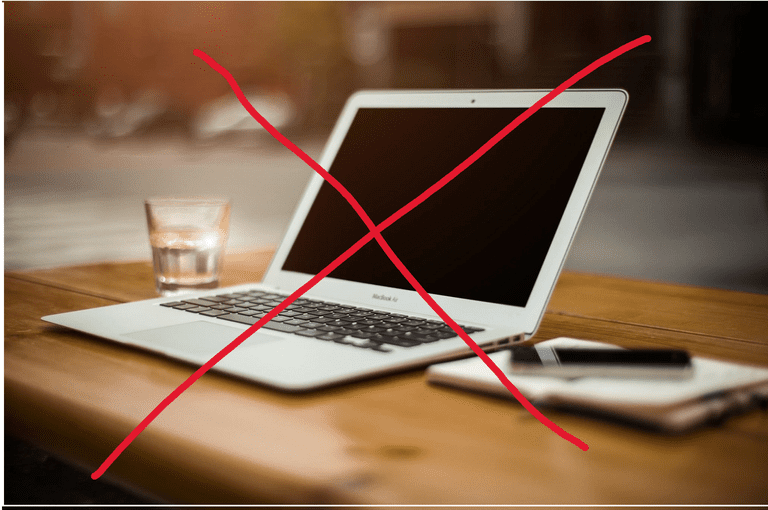

Technology Addiction
We should not forget the importance of technology but we should not forget the importance of people too! We should not look at our devices for too long.
Technology
- Do not forget to limit the use of technology
- Do not use technology for your health!
- Do not use technology to make you lazy.
People
- Do not forget to look after your family
- Do not forget to look after your friends
- Do not forget to look after your loved ones
Most Used Technology
- Mobile Phones
- Computers
- Tablets
Most Used Digital Medias
- Games and online entertainment: Games and online entertainment can be addictive, causing people to spend too much time in the virtual world instead of real life.
- Smartphones and tablets: Smartphones and tablets can become the primary means of communication with the world for people, and they may become addicted to constantly checking notifications, retweeting, and browsing social media and messaging apps.
- Social media and messaging: People may spend too much time on social media and messaging apps, reducing the time they spend in the real world. Moreover, this can lead to an addiction to news and message updates.
